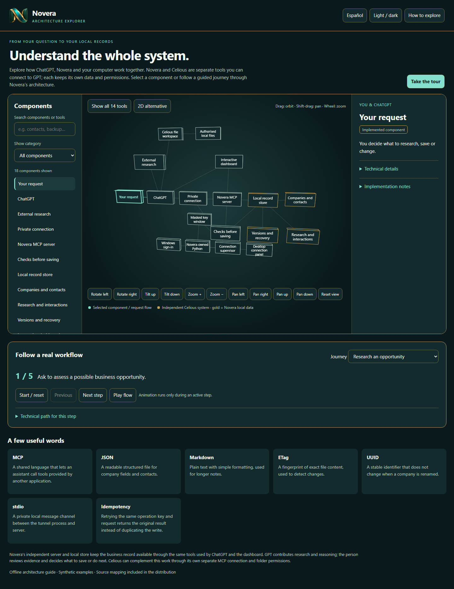
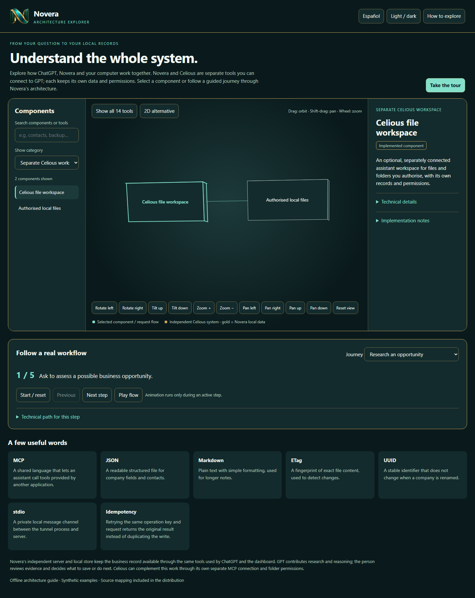

Research · relationships · continuity
Good business context should outlast a chat.
Novera keeps company research, professional relationships, evidence and next actions organised in a local workspace that GPT can access through MCP.
Interactive, offline and made with synthetic examples. No account or server connection required.

One workspace. Clear responsibilities.
Research with care.
Remember what matters.
GPT helps interpret information and reason across context. Novera keeps the structured business record. MCP carries requests between them. People review the evidence and decide what to save or do.
Celious can complement the work when separately connected, by handling files in folders you authorise. It remains its own system, with separate permissions and data.
A guided look beneath the surface
Follow the information.
Click into the system, move through real workflows, and switch between the spatial view and a simpler accessible list.

Designed for human judgement
Evidence stays visible.
Decisions stay yours.
Research, sources, confidence and next actions stay together. GPT can help make sense of the available information; you review the evidence, choose what to keep and decide what happens next.
Read the project overview →